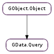

| Subclasses: | GData.CalendarQuery, GData.ContactsQuery, GData.DocumentsQuery, GData.PicasaWebQuery, GData.YouTubeQuery |
|---|
| static | new(q) |
| static | new_with_limits(q, start_index, max_results) |
| get_author() | |
| get_categories() | |
| get_etag() | |
| get_max_results() | |
| get_published_max() | |
| get_published_min() | |
| get_q() | |
| get_query_uri(feed_uri) | |
| get_start_index() | |
| get_updated_max() | |
| get_updated_min() | |
| is_strict() | |
| next_page() | |
| previous_page() | |
| set_author(author) | |
| set_categories(categories) | |
| set_etag(etag) | |
| set_is_strict(is_strict) | |
| set_max_results(max_results) | |
| set_published_max(published_max) | |
| set_published_min(published_min) | |
| set_q(q) | |
| set_start_index(start_index) | |
| set_updated_max(updated_max) | |
| set_updated_min(updated_min) |
| Name | Type | Flags | Description |
|---|---|---|---|
| author | str | r/w | Author search string. |
| categories | str | r/w | Category search string. |
| etag | str | r/w | An ETag against which to check. |
| is-strict | bool | r/w | Should the server be strict about the query? |
| max-results | int | r/w | The maximum number of entries to return. |
| published-max | int | r/w | Maximum date for returned entries to be published. |
| published-min | int | r/w | Minimum date for returned entries to be published. |
| q | str | r/w | Query terms for which to search. |
| start-index | int | r/w | One-based result start index. |
| updated-max | int | r/w | Maximum date for updates on returned entries. |
| updated-min | int | r/w | Minimum date for updates on returned entries. |
None
| Name | Type | Access |
|---|---|---|
| parent | GObject.Object | r |
Bases: GObject.Object
All the fields in the GData.Query structure are private and should never be accessed directly.
| Parameters: | q (str or None) – a query string, or None |
|---|---|
| Returns: | a new GData.Query |
| Return type: | GData.Query |
Creates a new GData.Query with its GData.Query :q property set to q.
| Parameters: | |
|---|---|
| Returns: | a new GData.Query |
| Return type: |
Creates a new GData.Query with its GData.Query :q property set to q, and the limits start_index and max_results applied.
| Returns: | the author property, or None if it is unset |
|---|---|
| Return type: | str |
Gets the GData.Query :author property.
| Returns: | the categories property, or None if it is unset |
|---|---|
| Return type: | str |
Gets the GData.Query :categories property.
| Returns: | the ETag property, or None if it is unset |
|---|---|
| Return type: | str |
Gets the GData.Query :etag property.
| Returns: | the maximum results property, or 0 if it is unset |
|---|---|
| Return type: | int |
Gets the GData.Query :max-results property.
| Returns: | the published-max property, or -1 |
|---|---|
| Return type: | int |
Gets the GData.Query :published-max property. If the property is unset, -1 will be returned.
| Returns: | the published-min property, or -1 |
|---|---|
| Return type: | int |
Gets the GData.Query :published-min property. If the property is unset, -1 will be returned.
| Returns: | the q property, or None if it is unset |
|---|---|
| Return type: | str |
Gets the GData.Query :q property.
| Parameters: | feed_uri (str) – the feed URI on which to build the query URI |
|---|---|
| Returns: | a query URI; free with GLib.free () |
| Return type: | str |
Builds a query URI from the given base feed URI, using the properties of the GData.Query. This function will take care of all necessary URI escaping, so it should not be done beforehand.
The query URI is what functions like GData.Service.query () use to query the online service.
| Returns: | the start index property, or 0 if it is unset |
|---|---|
| Return type: | int |
Gets the GData.Query :start-index property.
| Returns: | the updated-max property, or -1 |
|---|---|
| Return type: | int |
Gets the GData.Query :updated-max property. If the property is unset, -1 will be returned.
| Returns: | the updated-min property, or -1 |
|---|---|
| Return type: | int |
Gets the GData.Query :updated-min property. If the property is unset, -1 will be returned.
| Returns: | the strict property |
|---|---|
| Return type: | bool |
Gets the GData.Query :is-strict property.
Changes the state of the GData.Query such that when GData.Query.get_query_uri () is next called, it will build the query URI for the next page in the result set.
Ideally, the URI of the next page is retrieved from a feed automatically when GData.Service.query () is called, but GData.Query.next_page () will fall back to using GData.Query :start-index to emulate true pagination if this fails.
You should not implement pagination manually using GData.Query :start-index.
| Returns: | True if there is a previous page and it has been switched to, False otherwise |
|---|---|
| Return type: | bool |
Changes the state of the GData.Query such that when GData.Query.get_query_uri () is next called, it will build the query URI for the previous page in the result set.
See the documentation for GData.Query.next_page () for an explanation of how query URIs from the feeds are used to this end.
| Parameters: | author (str or None) – the new author string, or None |
|---|
Sets the GData.Query :author property of the GData.Query to the new author string, author.
Set author to None to unset the property in the query URI.
| Parameters: | categories (str or None) – the new category string, or None |
|---|
Sets the GData.Query :categories property of the GData.Query to the new category string, categories.
Set categories to None to unset the property in the query URI.
| Parameters: | etag (str or None) – the new ETag, or None |
|---|
Sets the GData.Query :etag property of the GData.Query to the new ETag, etag.
Set etag to None to not check against the server-side ETag.
| Parameters: | is_strict (bool) – the new strict value |
|---|
Sets the GData.Query :is-strict property of the GData.Query to the new strict value, is_strict.
| Parameters: | max_results (int) – the new maximum results value, or 0 |
|---|
Sets the GData.Query :max-results property of the GData.Query to the new maximum results value, max_results.
Set max_results to 0 to unset the property in the query URI.
| Parameters: | published_max (int) – the new maximum publish time, or -1 |
|---|
Sets the GData.Query :published-max property of the GData.Query to the new maximum publish time, published_max.
Set published_max to -1 to unset the property in the query URI.
| Parameters: | published_min (int) – the new minimum publish time, or -1 |
|---|
Sets the GData.Query :published-min property of the GData.Query to the new minimum publish time, published_min.
Set published_min to -1 to unset the property in the query URI.
| Parameters: | q (str or None) – a new query string, or None |
|---|
Sets the GData.Query :q property of the GData.Query to the new query string, q.
Set q to None to unset the property in the query URI.
| Parameters: | start_index (int) – the new start index, or 0 |
|---|
Sets the GData.Query :start-index property of the GData.Query to the new one-based start index, start_index.
Set start_index to 0 to unset the property in the query URI.
| Parameters: | updated_max (int) – the new maximum update time, or -1 |
|---|
Sets the GData.Query :updated-max property of the GData.Query to the new maximum update time, updated_max.
Set updated_max to -1 to unset the property in the query URI.
| Parameters: | updated_min (int) – the new minimum update time, or -1 |
|---|
Sets the GData.Query :updated-min property of the GData.Query to the new minimum update time, updated_min.
Set updated_min to -1 to unset the property in the query URI.